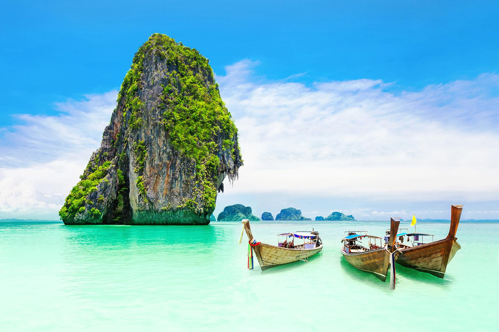

Etter en lang og kald vinter er det på tide å reise inn til varmere strøk. Sommeren er en tid for å nyte varmen, de lange lyse dagene, ta seg en tur på stranda, eller kanskje sitte ved hotell bassenget med en smakfull cocktail! Det er på denne tiden man kan reise og utforske nye steder, land, kulturer og mat på sitt beste.
Thailand byr på en fantastisk blanding av eksotiske strender, rik kultur og spennende matopplevelser. Perfekt for både eventyrere og dem som søker avslapning. Sjekk ut Ting å gjøre i Thailand for inspirasjon.
Spania er et land fylt med sol, strender, rik historie og fantastisk mat. Den perfekte destinasjonen for kultur, avslapning og eventyr. Her er beste by tipsene fra TUI.

Hellas er en drømmedestinasjon om sommeren med sine idylliske øyer, solrike strender og historiske landemerker. Perfekt for å oppleve kultur, avslapning og krystallklart vann. Kunne du tenkt deg litt øy-hopping? Her er guiden over de beste øyene ifølge reisetips.nettavisen.no

Colombia er et paradis fylt med aromatisk kaffe, fantastisk mat og blendende strender. Opplev fargerike byer som oser av kultur, og nyt gjestfriheten til de hyggelige menneskene. Dette landet er en ekte juvel for eventyrlystne sjeler. Ta en titt på serverdigheter og aktiviteter du bare må få med deg: Ting å gjøre i Colombia Hver region har sine tradisjonelle matretter, sjekk ut hvilke restauranter du bør besøke avhengig av hvilken by du er i: Restauranter i Colombia.

Albania tilbyr en enestående miks av uberørte strender, rik historie og sjarmerende byer. Utforsk det krystallklare vannet i Ksamil, opplev den historiske byen Berat, og nyt den varme gjestfriheten til de lokale. Perfekt for både eventyr og avslapning. Albania har noen skjulte perler som man turister dør etter å besøke, sjekk ut turist favorittene og planlegg turen din!